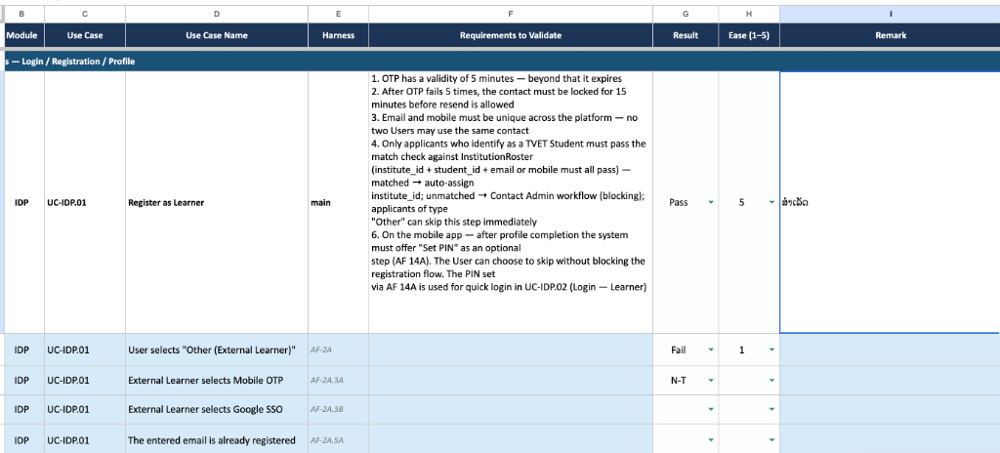

ແພລດຟອມຈັດການການຮຽນຮູ້ ແລະ ລະບົບປະຕິບັດການຫຼັງບ້ານ ໂຄງການຮ່ວມມືພັດທະນາສີມືແຮງງານອາຊີວະສຶກສາ (SkillsLao TVET Platform)
ລະບົບທັງໝົດເຮັດໜ້າທີ່ຈຳລອງໜ້າຕາ ແລະ ການເຮັດວຽກຈຳລອງເທົ່ານັ້ນ ຂໍ້ມູນທີ່ມີການບັນທຶກ ຫຼື ກອກລົງໃນເວັບທັງໝົດຄືຂໍ້ມູນຕົວຢ່າງ ບໍ່ສົ່ງຜົນກະທົບຕໍ່ຖານຂໍ້ມູນລະບົບຈິງໃດໆທັງສິ້ນ ບໍ່ຕ້ອງກັງວົນວ່າລະບົບຈະເສຍຫາຍ
ພວກເຮົາຈຳກັດເປົ້າໝາຍເວລາການທົດສອບຂອງທຸກກຸ່ມໃຫ້ຢູ່ພາຍໃນ 90 ນາທີ ເພື່ອຄວາມກະຊັບ ແລະ ບໍ່ດຶງເວລາການເຮັດວຽກຫຼັກຂອງຜູ້ຮ່ວມທົດສອບລະບົບຕົ້ນແບບທຸກຄົນ
ນັກສຶກສາ/ຜູ້ຮຽນ ຄົ້ນຫາຄອສ ລົງທະບຽນ ເຂົ້າຮຽນເຮັດຂໍ້ສອບແບບເຝິກຫັດ ແລະ ຊຳລະເງິນຜ່ານມືຖື ແລະ ເວັບ
Learner Web Portal Feedback_Learner.xlsxຄູອາຈານ ຈັດການຫຼັກສູດບົດຮຽນ ສ້າງແບບທົດສອບ ດຶງລາຍງານຄວາມຄືບໜ້າ ແລະ ກວດໃຫ້ຄະແນນການບ້ານ
Backoffice Portal Feedback_Instructor.xlsxຜູ້ດູແລລະດັບວິທະຍາໄລ ຈັດການລາຍຊື່ນັກຮຽນກຸ່ມໃຫຍ່ ຄອນຟິກຄູຜູ້ສອນ ຈັດການລາຄາ ແລະ ອະນຸມັດການເຜີຍແຜ່ຄອສ
Backoffice Portal Feedback_ProgramAdmin.xlsxຜູ້ດູແລລະບົບສູງສຸດ ປັບແຕ່ງນະໂຍບາຍຄວາມປອດໄພ ເປີດປິດຟີເຈີ ເບິ່ງບັນທຶກການສົ່ງຂໍ້ຄວາມ ແລະ ລາຍງານຄວາມໂປ່ງໃສ
Backoffice Portal Feedback_SuperAdmin.xlsxຢູ່ຫົວມຸມເທິງຂອງທຸກໜ້າຈໍຕົ້ນແບບຈະມີແຖບຕົວເລືອກຈຳລອງສາກເຮັດໜ້າທີ່ຄວບຄຸມສະຖານະໜ້າເວັບເພື່ອທົດສອບເຄສຕ່າງໆ:
ຫາກໜ້າຈໍດັ່ງກ່າວລະບຸຄຳວ່າ Pending ຫຼື ປຸ່ມກົດສະແດງສະຖານະສີຈາງບໍ່ສາມາດຄລິກເຊື່ອມໂຍງໜ້າຕ່າງໄດ້:
ປ້ອນຜົນລັບການເຮັດວຽກ:
Pass = ເຮັດວຽກໄດ້ຮາບຮື່ນ
Fail = ມີບັນຫາ ຂັ້ນຕອນບໍ່ກົງ ຫຼື ຈຸດສັບສົນ
N-T = ໜ້ານັ້ນກົດທົດສອບບໍ່ໄດ້ (Not Tested)
...
ປະເມີນຄວາມເພິ່ງພໍໃຈການຕອບສະໜອງ ຄະແນນຕັ້ງແຕ່ 1 ເຖິງ 5:
1 = ຊອກຫາຍາກຫຼາຍ ສັບສົນ ຊອກປຸ່ມບໍ່ເຫັນ
5 = ໃຊ້ງານງ່າຍ ເຂົ້າໃຈຂັ້ນຕອນທັນທີ
ຂຽນຂໍ້ຄວາມລະບຸສິ່ງທີ່ເກີດຂຶ້ນ ເຊັ່ນ ປຸ່ມບໍ່ເຫັນເດັ່ນ, ຄຳແປພາສາລາວສັບສົນ, ຫຼື ຕ້ອງການຟີວເພີ່ມເຕີມໃນລະບົບຈິງ

ແບບຟອມການສະໝັກສະມາຊິກ ແລະ ຂັ້ນຕອນການຢືນຢັນລະຫັດ OTP ຈຳລອງໃຊ້ງານງ່າຍ ແລະ ອະທິບາຍໄດ້ເຂົ້າໃຈດີຫຼືບໍ່?
ການຕອບສະໜອງ ແລະ ໜ້າຕ່າງສະແດງຄວາມຜິດພາດເມື່ອລັອກອິນລົ້ມເຫຼວມີຄວາມຊັດເຈນ ແລະ ບໍ່ສັບສົນແມ່ນຫຼືບໍ່?
ຂັ້ນຕອນແກ້ໄຂຂໍ້ມູນ ແລະ ການສະຫຼັບອີເມວ ຫຼື ເບີມືຖືດ້ວຍລະບົບຄວາມປອດໄພມີຄວາມຍືດຫຍຸ່ນດີຫຼືບໍ່?
ຄຳເຕືອນສະແດງຄວາມຊັບຊ້ອນຂອງລະຫັດຜ່ານ ແລະ ຄວາມງ່າຍໃນການຂໍລະຫັດຜ່ານໃໝ່ຊ່ວຍໃຫ້ເຮັດຕາມຂັ້ນຕອນໄດ້ດີຫຼືບໍ່?
ໜ້າຈໍແຄັດຕາລັອກການຈັດວາງວິຊາຮຽນ, ການຄັດກອງແບ່ງປະເພດ ແລະ ການຄົ້ນຫາຂັ້ນສູງມີຄວາມສວຍງາມເປັນສັດສ່ວນດີຫຼືບໍ່?
ປຸ່ມຂັ້ນຕອນການກົດສະໝັກ, ການເລືອກປະເພດຮຽນ ແລະ ເງື່ອນໄຂການເຂົ້າຮຽນອະທິບາຍໄດ້ຄອບຄຸມດີຫຼືບໍ່?
ການສະຫຼັບປ່ຽນໜ້າບົດຮຽນ, ເມນູສະແດງຄວາມກ້າວໜ້າຮ້ອຍລະ ແລະ ການສະຫຼັບແທັບມີຄວາມໄວ ແລະ ເປັນສັດສ່ວນດີຫຼືບໍ່?
ເກນປະເມີນການກວດວຽກ, ຄະແນນ ແລະ ລາຍລະອຽດເວລາແລ່ນເສັ້ນຕາຍ (Deadline) ມີຄວາມຊັດເຈນສະດຸດຕາດີຫຼືບໍ່?
ຮູບແບບດີໄຊນ໌ຂອງເອກະສານຢັ້ງຢືນຄວາມຮູ້ (ໃບເຊີ) ມີຄວາມໜ້າເຊື່ອຖື, ສວຍງາມ ແລະ ສະແດງຂໍ້ມູນຄົບຖ້ວນຫຼືບໍ່?
ເຄື່ອງຫຼິ້ນວິຊາຮຽນຮອງຮັບໄຟລ໌ໄດ້ຫຼາກຫຼາຍ ແລະ ມີການເຕືອນເງື່ອນໄຂການລັອກບົດຮຽນທີ່ເດັ່ນຊັດດີຫຼືບໍ່?
ເຄື່ອງມືນັບຖອຍຫຼັງເວລາເຕືອນສອບ ແລະ ໜ້າຈໍອະທິບາຍຜົນສອບສະເລີຍຂໍ້ມູນງ່າຍຕໍ່ການທົບທວນຫຼືບໍ່?
ຟັງຊັນການອັບໂຫລດໄຟລ໌ສະແດງຜົນເປີເຊັນໂຫລດຊັດເຈນ ແລະ ກ່ອງສະແດງຄຳວິຈານຂອງຄູອ່ານງ່າຍດີຫຼືບໍ່?
ການພິມຕອບຄຳຖາມ, ການໃສ່ປ້າຍກຳກັບ ແລະ ການແຍກແຍະຄວາມຄິດເຫັນຂອງເພື່ອນຮ່ວມຄລາສສະບາຍຕາດີຫຼືບໍ່?
ການສະແກນຈ່າຍຄິວອາໂຄ້ດຈຳລອງ BCEL ແລະ ການອັບເດດສະຖານະປົດລັອກຮຽນມີຄວາມລື່ນໄຫຼເຂົ້າໃຈງ່າຍດີຫຼືບໍ່?
ໜ້າລາຍການອາຍຸໃຊ້ງານທີ່ເຫຼືອ ແລະ ປຸ່ມຕໍ່ອາຍຸ ມອງຫາໄດ້ງ່າຍ ແລະ ຕອບຮັບການເຮັດວຽກໄດ້ດີພຽງໃດ?
ການຈັດລາຍການໃບຮັບເງິນໃນຕາຕະລາງ ແລະ ການພິມລາຍງານສະຫຼຸບຍອດໃຊ້ງານໄດ້ດີ ແລະ ເຂົ້າໃຈງ່າຍຫຼືບໍ່?
ຕຳແໜ່ງໄອຄອນກະດິ່ງ, ການຮຽງລຳດັບເວລາເຕືອນ ແລະ ຄວາມເດັ່ນຊັດຂອງຈຸດແດງເຕືອນໃໝ່ເຂົ້າໃຈງ່າຍດີຫຼືບໍ່?
ພາບລວມ ແລະ ກຣາຟສະແດງຜົນສະຖິຕິ My Courses ມີຄວາມສວຍງາມ, ອ່ານຄ່າງ່າຍ ແລະ ໃຊ້ສະຫຼຸບຜົນດີພໍຫຼືບໍ່?
ຂັ້ນຕອນການຕັ້ງຄ່າລະຫັດຜ່ານ ແລະ ການເລືອກເປີດໃຊ້ງານຜ່ານ Google ມີຄວາມສະດວກ ແລະ ອະທິບາຍໄດ້ເຂົ້າໃຈງ່າຍຫຼືບໍ່?
ການແຍກໜ້າຈໍລັອກອິນເຈົ້າໜ້າທີ່ ແລະ ນະໂຍບາຍລະງັບສິດຊົ່ວຄາວເມື່ອກອກລະຫັດຜິດຄົບ 5 ຄັ້ງຊັດເຈນຫຼືບໍ່?
ໜ້າຈໍແກ້ໄຂປະຫວັດສ່ວນຕົວ ແລະ ລາຍລະອຽດຄວາມຊ່ຽວຊານຂອງຜູ້ສອນມີຄວາມສະດວກ ແລະ ໃຊ້ງານງ່າຍຫຼືບໍ່?
ຂັ້ນຕອນການອອກຈາກລະບົບ ແລະ ການປ່ຽນເສັ້ນທາງກັບໜ້າລັອກອິນມີຄວາມປອດໄພ ແລະ ວ່ອງໄວດີຫຼືບໍ່?
ຂັ້ນຕອນກູ້ຄືນບັນຊີສຳລັບເຈົ້າໜ້າທີ່ພໍທັລເຂົ້າໃຈງ່າຍ ແລະ ມີກ່ອງແຈ້ງເຕືອນຄວາມປອດໄພທີ່ດີຫຼືບໍ່?
//ເຄື່ອງມືຈັດລຽງ ແລະ ປ້ອນຂໍ້ມູນເຂົ້າໃຈງ່າຍ ສຳລັບຄູຜູ້ຂຽນບົດຮຽນຫຼືບໍ່? ໂຄງສ້າງຕົ້ນໄມ້ເບິ່ງຊັບຊ້ອນເກີນໄປບໍ່?
ເຄື່ອງມືເພີ່ມຂໍ້ສອບໃຊ້ງານສະດວກຫຼືບໍ່? ການຕອບສະໜອງວ່ອງໄວ ແລະ ບໍ່ສັບສົນແມ່ນບໍ່?
ເມນູສ້າງແບບມອບໝາຍວຽກການບ້ານ ແລະ ການຕັ້ງເກນຣູບຣິກສຳລັບກວດໃຫ້ຄະແນນມີຄວາມຢືດຫຍຸ່ນ ແລະ ເຂົ້າໃຈງ່າຍພຽງໃດ?
ສະຖານະການຍື່ນສົ່ງຄອສສະແດງຜົນຊັດເຈນ ແລະ ເຂົ້າໃຈຂັ້ນຕອນຖັດໄປຫຼືບໍ່?
ການນຳເຂົ້າສື່ SCORM ແລະ ຄວາມຊັດເຈນຂອງໜ້າຕ່າງສະແດງຂັ້ນຕອນການອັບໂຫລດຕອບສະໜອງໄດ້ດີຫຼືບໍ່?
ຄວາມໄວ ແລະ ຄວາມໜ້າເຊື່ອຖືໃນການສະແດງແຖບໂປຣເກຣສຂະນະບີບອັດໄຟລ໌ SCORM ມີຄວາມຊັດເຈນດີຫຼືບໍ່?
ຂັ້ນຕອນການສືບຄົ້ນ ແລະ ກຳນົດສິດຜູ້ຂຽນຮ່ວມມີການອັບເດດ ແລະ ແຈ້ງເຕືອນສະຖານະທັນທີຫຼືບໍ່?
ໜ້າຕູ້ຈັດເກັບຄັງສື່ການສອນ (Course Assets Library) ຈັດລຽງໄດ້ຮຽບຮ້ອຍ ແລະ ໃຊ້ງານງ່າຍຫຼືບໍ່?
ປະຕິບັດການຕັ້ງຄ່າ ແລະ ຈັດຕັ້ງຫ້ອງຮຽນຍຸ້ງຍາກຫຼືບໍ່? ໜ້າຕາຕະລາງລາຍຊື່ມີຄວາມຊັດເຈນດີບໍ່?
ກຣາຟສະຫຼຸບຜົນ ແລະ ຕາຕະລາງລາຍງານຜົນສະແດງຂໍ້ມູນຄົບຖ້ວນສຳລັບກວດວັດປະສິດທິພາບການຮຽນຫຼືບໍ່?
ໜ້າຕາຕະລາງອະນຸມັດລາຍຊື່ ແລະ ການຈັດສິດນັກຮຽນໃນຫ້ອງຮຽນ ມີຂັ້ນຕອນກະຊັບດີຫຼືບໍ່?
ຕາຕະລາງຣູບຣິກໃຊ້ງານງ່າຍ ແລະ ເຂົ້າໃຈເງື່ອນໄຂບໍ່? ເມນູພິມຄຳວິຈານສະດວກພຽງໃດ?
ຕຳແໜ່ງກະດິ່ງເຕືອນຈຸດແດງ ແລະ ການແຍກແຍະປະເພດແຈ້ງເຕືອນດ່ວນຂອງເຈົ້າໜ້າທີ່ມີຄວາມຊັດເຈນ ແລະ ໃຊ້ງານດີຫຼືບໍ່?
ຂັ້ນຕອນການກຳນົດລະດັບບົດບາດ (Role) ແລະ ການເຊີນມີຄວາມເໝາະສົມ ແລະ ສະດວກວ່ອງໄວໃນການເຮັດວຽກຕົວຈິງຫຼືບໍ່?
ລະບົບການອັບໂຫຼດ ແລະ ການສະແດງຜົນພຣີວິວຂໍ້ມູນກ່ອນບັນທຶກມີຄວາມຊັດເຈນ ເຂົ້າໃຈງ່າຍ ຫຼືບໍ່? ແຖບແຈ້ງເຕືອນຂໍ້ມູນຜິດພາດອ່ານເຂົ້າໃຈງ່າຍບໍ່?
CN: ການບັນທຶກຂໍ້ມູນເຈົ້າໜ້າທີ່ ແລະ ການສະແດງຜົນຂໍ້ມູນໃໝ່ໃນລະບົບພໍທັລມີການຕອບຮັບທີ່ຖືກຕ້ອງວ່ອງໄວຫຼືບໍ່?
ເມນູຈັດການການຄົ້ນຫາ ແລະ ປຸ່ມສັ່ງລະງັບສິດການຮຽນມີຄວາມຊັດເຈນເພື່ອຄວາມປອດໄພໃນລະບົບຫຼືບໍ່?
ໜ້າຈໍກ່ອງຕົວເລືອກສິດການເຮັດວຽກ (Permissions Checklist) ມີການຈັດໝວດໝູ່ອ່ານເຂົ້າໃຈງ່າຍຫຼືບໍ່?
ການສະແດງຜົນຕາຕະລາງລາຍຊື່ປະຫວັດ ແລະ ຄວາມໄວການກອງລາຍຊື່ທະບຽນນັກສຶກສາໃຊ້ງານສະດວກດີຫຼືບໍ່?
ການກວດສອບພຣີວິວເອກະສານຫຼັກຖານ ແລະ ການກົດອະນຸມັດ ຫຼື ປະຕິເສດຄຳສະໝັກໃນໜ້ານີ້ວ່ອງໄວ ແລະ ຊັດເຈນດີພຽງໃດ?
ໜ້າຈໍນຳສະເໜີຂໍ້ມູນຫຼັກສູດສຳລັບແອດມິນກວດສອບມີຄວາມຄົບຖ້ວນໃນການຕັດສິນໃຈອະນຸມັດຫຼືບໍ່? ປຸ່ມກົດຕ່າງໆມີຄວາມຊັດເຈນ ແລະ ເດັ່ນພໍບໍ່?
ຂັ້ນຕອນການເລືອກ ແລະ ກົດນຳເຂົ້າວິຊາຮຽນທີ່ແບ່ງປັນຮ່ວມກັນລະຫວ່າງວິທະຍາໄລອື່ນມີຄວາມສະດວກ ແລະ ຊັດເຈນຫຼືບໍ່?
ໜ້າຕາຕາຕະລາງສະຫຼຸບຂີດຄວາມສາມາດ ແລະ ຊົ່ວໂມງສອນຂອງຄູຜູ້ສອນມີຄວາມສະດວກຕໍ່ການປະເມີນພາລະວຽກຫຼືບໍ່?
ການຈັດທຳໂຄງສ້າງລາຍວິຊາສະເພາະທາງ ແລະ ການເລືອກຈັບຄູ່ຄໍສມີຄວາມເໝາະສົມ ແລະ ເຂົ້າໃຈງ່າຍຫຼືບໍ່?
ຄວາມງ່າຍໃນການສ້າງ ແລະ ຈັດການລົບປ້າຍແທັກໝວດຄໍສຮຽນມີຄວາມຍືດຫຍຸ່ນດີຫຼືບໍ່?
ການບັນທຶກລາຄາ ແລະ ການປັບປ່ຽນສະຖານະຄອສໃຊ້ງານໄດ້ສະດວກບໍ່? ລະບົບການຈຳກັດສິດເມື່ອຄອສປ່ຽນຈາກເສຍເງິນເປັນຟຣີມີຄຳອະທິບາຍທີ່ຊັດເຈນຫຼືບໍ່?
ການແບ່ງກຸ່ມປະເພດປ້າຍກຳກັບຊ່ວຍຫຼຸດເວລາໃນການຈັດການຂໍ້ມູນຫຼັກສູດປະລິມານຫຼາຍໄດ້ຈິງຫຼືບໍ່?
ການແບ່ງກຸ່ມປະເພດປ້າຍກຳກັບຊ່ວຍຫຼຸດເວລາໃນການຈັດການຂໍ້ມູນຫຼັກສູດປະລິມານຫຼາຍໄດ້ຈິງຫຼືບໍ່?
ແບບຟອມການກຳນົດມູນຄ່າຮຽນ ແລະ ໄລຍະເວລາສິດເຂົ້າໃຈງ່າຍ ແລະ ໃຊ້ງານໄດ້ດີຫຼືບໍ່?
ຂັ້ນຕອນການລະງັບສິດ ແລະ ການເຕືອນຄວາມປອດໄພເພື່ອປ້ອງກັນການກົດພາດໃຊ້ງານໄດ້ດີພໍຫຼືບໍ່?
ຕາຕະລາງສະແດງປະຫວັດ ແລະ ຟັງຊັນການດາວໂຫຼດໄຟລ໌ຮອງຮັບຮູບແບບຂໍ້ມູນທີ່ສາມາດນຳໄປໃຊ້ງານໃນຂະບວນການເຮັດວຽກຕົວຈິງໄດ້ງ່າຍຫຼືບໍ່?
ແຖບການຄັດກອງສະຖານະການສົ່ງສຳເລັດ/ຫຼົ້ມເຫຼວ ແລະ ການກວດສອບລະຫັດຜິດພາດຂອງ API ເຂົ້າໃຈໄດ້ງ່າຍບໍ່?
ຮູບແບບແຜນພູມ (Charts) ກຣາຟສະແດງສະຖິຕິ ແລະ ລາຍງານຕາຕະລາງແຍກໝວດໝູ່ ໃຫ້ຂໍ້ມູນທີ່ຈຳເປັນໃນການສົ່ງມອບລາຍງານຜູ້ມີສ່ວນກ່ຽວຂ້ອງຄົບຖ້ວນຫຼືບໍ່?
ໂຄງສ້າງເມນູຕັ້ງຄ່າ ແລະ ກ່ອງປ້ອນນະໂຍບາຍ ເຂົ້າໃຈງ່າຍ ແລະ ປອດໄພພຽງພໍສຳລັບການເປັນແອດມິນສ່ວນກາງຫຼືບໍ່?
ຕາຕະລາງຄົ້ນຫາ ແລະ ຟິວເຕີຄັດກອງສະຖາບັນແຍກແຍະລາຍລະອຽດຊັດເຈນ ແລະ ໂຫຼດຂໍ້ມູນທີ່ຈຳເປັນຄົບຖ້ວນບໍ່?
ຂໍ້ມູນລາຍລະອຽດ Audit Log ສະແດງ IP ວັນເວລາ ແລະ ຜົນການດຳເນີນການມີຄວາມຊັດເຈນ ແລະ ຕິດຕາມສືບປະຫວັດໄດ້ງ່າຍຫຼືບໍ່?
ຟອມກອກປະຫວັດສະຖາບັນ ແລະ ການເປີດ-ປິດການໃຊ້ງານ ສະດວກວ່ອງໄວໃນການອັບເດດຂໍ້ມູນຂອງວິທະຍາໄລອາຊີວະທັງໝົດໃນລາວຫຼືບໍ່?
ຂໍຂອບໃຈອາຈານ, ຜູ້ຕາງໜ້າວິທະຍາໄລ, ແອດມິນລະບົບ ແລະ ຜູ້ຮ່ວມໂຄງການທຸກທ່ານເປັນຢ່າງສູງທີ່ສະຫຼະເວລາອັນມີຄ່າໃນການຮ່ວມທົບທວນລະບົບຕົ້ນແບບຈຳລອງໃນມື້ນີ້. ຄຳຄິດເຫັນຂອງທຸກທ່ານມີຄຸນຄ່າຍິ່ງຕໍ່ການຮ່ວມພັດທະນາແພລດຟອມການຈັດການຮຽນຮູ້ອາຊີວະສຶກສາ (SkillsLao TVET Platform) ໃຫ້ຕອບໂຈດຜູ້ໃຊ້ງານຈິງ ແລະ ກ້າວໜ້າຢ່າງໝັ້ນຄົງ.
ທ່ານສາມາດສອບຖາມຂໍ້ສົງໄສເພີ່ມເຕີມ, ສົນທະນາແລກປ່ຽນຄຳຄິດເຫັນ ຫຼື ຊີ້ແນະແນວທາງທີ່ຄວນປັບປຸງໄດ້ທັນທີໃນຕອນທ້າຍຊົ່ວໂມງນີ້ຄັບ